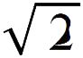

艾利：您颂扬数学，强调数学不仅对于哲学家非常重要，而且对于任何想要过您所谓“真实生活”的人来说也十分重要。这就引出了一个最后的批判性的问题：我们真的能让人们发现——或重新发现——数学吗？首先，我们如何让人们爱上数学？
巴迪欧：好的，现在您问了一个我特别有感觉的问题。我认为数学在专业教学中所起到的作用完全不是它应该起的作用，数学教学从未起到它应该起到的作用。理由是，当你讲授数学的时候，你首先必须说服学生数学很有趣。你不应该说：“数学是你要知道的东西，你要这样学习，那样学习。”严格来说，它让你们去面对最紧要的事情。例如，首先教孩子们学习乘法口诀表。那仅仅只是一种算数的实用方法。但对于真正的数学问题，数学给你带来的问题十分重要，也十分复杂，正如我已经说的任何类型的认识转变一样，必须带来这样的感觉，即数学很有趣。
所以，我们如何激发出这种感觉呢？这个问题已经解决了。我相信一个孩子，甚至一个年轻人，会在解决数学问题的过程中找到乐趣。因为孩子天生喜欢解谜，他们充满好奇心，热爱发现他们之前从不知道的东西。围绕着解开谜题，揭露秘密，一切东西都迎刃而解。数学教学可以完全致力在孩子、成人，最终在所有人身上实现这个目标，让他们感觉到数学的特别之处，即在某个时刻，你可以用令人惊奇和意想不到的方式解开谜题，这些谜题在形式上得到了清晰和准确的概括，而它们确实是真正的谜题。当你遇到这样的问题，你会毫不犹豫地进入游戏世界之中，因为解开谜题毕竟就是游戏的特征。这并不是说数学就是一种游戏，但它的确会激发兴趣。此外，在某些杂志和报纸上，你也会发现一些数学谜题，我并不认为可以轻视这种方式，这不同于对填字游戏的批评，填字游戏教给我们的只是拼写，以及一种相当复杂的语义学。
除了让学习者感觉到数学很有趣的诸多方法之外，在数学之外，还有两个支撑点：
首先是数学史，我们可以用鲜明活泼、栩栩如生的方式，而非遵循枯燥乏味、模式化解答的方式来表述数学史。不要按照那些解答，甚至不要主要依赖于那些解答，而是要弄清作为谜题的那些问题的趣味，以及在经历了许多磨难之后最终解决了这些问题的乐趣。理解一些古希腊数学定理在当时的情况下，为什么以及如何被发现，这些定理用来干什么，后来变成了什么样子，哲学家对之如何进行评价，等等，这些会非常令人心旷神怡。举一个例子，在柏拉图的《美诺篇》中有一个问题：给出一个正方形，求一个面积是原有正方形面积2倍的新正方形。这个问题也许起初涉及农民在耕地面积上的冲突。在对话中，苏格拉底向站在一旁的童奴提出了这个问题。他证明了，在一系列艰难的思考和错误之后，这个童奴也可以十分轻易地得出证明：面积为正方形ABCD面积2倍的正方形的边长等于正方形的对角线长，也就是AC。实际上只要你画出一个正方形，并以原正方形的对角线为边画出第二个正方形，那么你就可以看到这个结果。在童奴理解这个问题的背后，是一个极度复杂玄妙的问题。实际上，任何人都很容易理解，正方形的面积是它的两条边的乘积。也就是说，第一个正方形ABCD的边长是1（例如1m），那么它的面积就是1×1，即1（m2）。那么以对角线AC为边长的第二个正方形的面积，正如画出来的正方形所表示的那样，是2（m2）。因此，第二个正方形的边长的长度，即对角线AC是多少呢？两个面积的比例很清楚，是2∶1。那么两条边长的比例呢？我们将毕达哥拉斯定理用在直角三角形ABC上，我们得到AB2+BC2=AC2。因为AB=BC=1，那么我们得出12+12=AC2。即1+1=AC2，2=AC2。因此，对角线AC的长度必然是一个其平方等于2的数。今天，我们将这个数称为

。但问题在于，这个数既不是整数，也不是有理数（两个整数之比，也叫作分数）。对于古希腊人来说，他们所了解的数，只有整数和分数，而用来衡量对角线长度的数，即现代意义上的，并不存在。即便在今天，这个问题依然存在，我们将这种类型的数叫作“无理数”。这样，小小的几何学问题“画一个正方形，其面积是原有正方形面积的2倍”，这个答案是直观的，但这个问题开启了一个算术上的黑洞，其问题曾困惑古希腊数学家们300多年。直到今天，这个问题还会在无理数问题上造成一些相当棘手的问题。这也就是为什么数学问题的历史、对其历史的评价，以及找到解答这些问题的关键，在我心目中，就是讲授数学的一部分。除了数学史之外，第二个支撑点以哲学为武器，因为在最终的分析中，数学乐趣也在于探讨数学是什么。我们已经说过，这个问题属于哲学问题，没有其他领域会探索这样的问题。这就是为什么我们认为需要从学前教育就开始讲授哲学。众所周知，3岁小孩儿比8岁小孩儿能更好地进行形而上学思考，因为他们探索的全是形而上学问题。什么是自然？什么是死亡？什么是他者？为何只有两种性别，而没有第三种？所有这些问题都是前哲学研究的既定领域。正如我认为一些基础数学的问题，可以通过讲小故事、出一些小趣味题来引导孩子，我认为最高阶的哲学也可以这样来做。在中学最后一年里，从非常难的难题开始讲哲学简直是个耻辱。我们付出了大量的努力，尤其是我已经仙逝的同事雅克·德里达为此据理力争，认为应该从九年级或十年级开始讲授哲学。然而，我们没有取得一点儿进步。哲学仍然是一门在中学最后一年中濒临绝境的学科，而数学是社会选拔当中的一个僵化的工具。好吧，我建议在学前教育的最后一年，同时讲授哲学和数学：5岁的孩子肯定能很好地应用无限的形而上学和集合论！